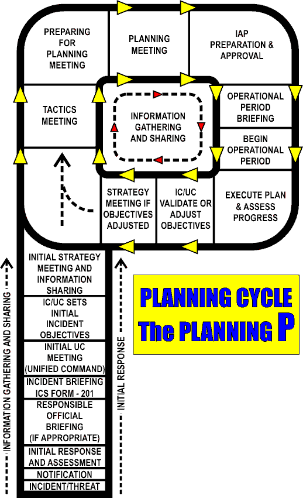

It is essential that every incident or event be managed according to a plan. In ICS, the management plan is called the Incident Action Plan (IAP). The Command and General staff must participate in the planning process and in the development of the IAP.
The planning process must:
There are five primary phases of the planning process that generally apply to all incidents, regardless of the size, type and complexity. On smaller incidents, it is the responsibility of the IC to develop and communicate a simple plan through verbal briefings. For more complex incidents, a written IAP is prepared by the entire IMT and would require a more complete and time-consuming planning process.
The five primary phases in the planning process are:

The “Planning P” graphic is a visual representation of the Operational Planning Cycle. It lays out the sequential steps that successful incident management teams use to manage an incident. The stem of the Planning P shows the processes in the initial stages of an incident, while the circle part of the P shows the repeated processes that continue until the end of the incident and the planning process is no longer required.
When: The IMT is activated.
Facilitator: Responsible Official
Attendees: IMT
The RO's Briefing is not only valuable to the IMT, but it also shows how the RO fits into the process, how the role is critical to the success of the IMT, and how to gather information as they prepare to assume command of a large incident. This interaction between the RO and IMT at the beginning and throughout the incident ensures the agency policies and regulations are met.
RESPONSIBILITIES
Incident Commander (IC / UC)
When: Transition from the IC to the IMT
Facilitator: Current IC / UC or PSC
Attendees: Incoming IC / UC and C&GS
In the beginning phases of every incident, there is an initial response organization and IC. When this initial organization must be replaced by an IMT, the process is called a “Transfer of Command”.
In order to maintain continuity and safety of the current responders and the public, the transfer of command must be controlled and orderly. The ICS 201 is a tool used to accomplish this step.
In some cases, the Initial IC is not able to leave the ICP to attend the RO's Briefing. In this case, the incoming IC to initial IC Briefing is accomplished later at the ICP, utilizing the ICS 201. Regardless of the location, this information exchange must be accomplished.
RESPONSIBILITIES
Incident Commander (IC / UC)
Incident Briefing Agenda using ICS 201 as an outline, include:
When: The IC / UC is formed prior to the first meeting
Facilitator: IC / UC member or PSC
Attendees: Only ICs that will comprise the UC
RESPONSIBILITIES
Incident Commander (IC / UC)
Deputy IC assignments
Operations
Planning
Logistics & Finance / Administration
When: Prior to C&GS Meeting
Facilitator: IC / UC member or PSC
Attendees: IC / UC members & selected staff
RESPONSIBILITIES
Command
Operations
Planning
When: Prior to Tactics Meeting
Facilitator: PSC
Attendees: IC / UC members, C&GS, SITL, RESL, DOCL
RESPONSIBILITIES
Command
Operations
Planning
Situation Unit Leader
Resource Unit Leader
Documentation Unit Leader
When: Prior to Tactics Meeting
Facilitator: PSC
Attendees: OSC & SOFR; (Note: This is a working session NOT a meeting)
RESPONSIBILITIES
Operations
Planning
Safety Officer
When: Prior to Planning Meeting
Facilitator: PSC
Attendees: PSC, OSC, LSC, SOFR, SITL, RESL, DOCL, COML & Technical Specialists, as needed
RESPONSIBILITIES
Planning
Operations
Safety Officer
Logistics
When: Prior to Planning Meeting
Facilitator: PSC
Attendees: C&GS (Note: This is a working session NOT a meeting)
RESPONSIBILITIES
Command
Operations
Planning
Logistics
Finance / Administration
When: After the Tactics meeting
Facilitator: PSC
Attendees: IC / UC members, C&GS, SITL, DOCL, RESL, MEDL & Technical Specialists, as needed
The Planning Meeting is normally conducted by the Planning Section Chief. The sequence of steps that follows is intended to aid the Planning Section Chief in developing the IAP. The planning steps are used with the Operational Planning Worksheet (ICS 215).
RESPONSIBILITIES
Command
Operations
Planning
Logistics
Finance / Administration
Command Staff
Refer to Planning Meeting Agenda
When: Immediately after Planning Meeting, PSC sets deadlines for products
Facilitator: PSC
Attendees: Note: This is not a meeting but a period of time.
RESPONSIBILITIES
Command
Operations
Planning
Logistics
Finance / Administration
Refer to IAP Components
When: Approx. 2 hour prior to shift change
Facilitator: PSC
Attendees: IC / UC, C&GS, Branch Directors, Division / Group Supervisors, Task Force / Strike Team Unit Leaders, others as appropriate
RESPONSIBILITIES
Command
Operations
Planning
Logistics
Finance / Administration
Staff Briefs
Refer to Operational Period Briefing Agenda
RESPONSIBILITIES
Incident Commander (IC / UC)
Operations
Planning
Logistics
Finance / Administration
Safety Officer
Remind attendees to turn off pagers, cell phones, and radios so that the meeting can progress quickly and without interruption.
Agenda
| Responsibility
|
|---|---|
Situation & Resources Briefing |
Planning Section Chief |
Incident Objectives & Policy Issues |
Incident Commander |
Primary & Alternative Strategies to meet Objectives |
Operations Section Chief; other Section Chiefs contribute |
Specify reporting locations & additional facilities needed |
Operations Section Chief; Logistics Section Chief assists |
Develop Resource Orders |
Planning Section Chief; Logistics Section Chief |
Consider support requirements needed for communications, traffic, safety, and medical. |
Logistics Section Chief |
Finalize, approve, & implement the IAP |
Planning Section Chief finalizes IAP; Incident Commander approves IAP; General Staff implements IAP |
Remind attendees of the IAP document deadline and location for turning them in.
Main Components(ICS Form)
| Responsibility
|
|---|---|
| Incident Objectives (ICS 202) | Incident Commander |
| Organizational Assignment List (ICS 203) | Resource Unit Leader |
| Assignment List (ICS 204) | Resources Unit Leader |
| Incident Radio Communications Plan (ICS 205) | Communications Unit Leader |
| Medical Plan (ICS 206) | Medical Unit Leader |
| Incident Maps | Situation Unit Leader |
| Safety Message (ICS 208) | Safety Officer |
Other Components (Incident Dependent)
| Responsibility
|
|---|---|
| Air Operations Summary | Air Operations |
| Traffic Plan | Ground Support Unit |
| Decontamination Plan | Technical Specialist |
| Waste Management or Disposal Plan | Technical Specialist |
| Demobilization Checkout (ICS 221) | Demobilization Unit |
| Site Security Plan | Law Enforcement, Technical Specialist or Security Manager |
| Investigative Plan | Law Enforcement |
| Evidence Recovery Plan | Law Enforcement |
| Evacuation Plan | As required |
| Sheltering/Mass Care Plan | As required |
| Others | As required |
Agenda Item |
Responsibility / Position |
|---|---|
| Incident Objectives | Planning Section Chief |
| Current Situation Update | Operations Section Chief |
| Weather Forecast | Incident Meteorologist |
| Operational Assignments | Operations Section Chief |
| Safety Briefing | Safety Officer |
| Logistical Concerns | Logistics Section Chief |
| Financial Concerns | Finance / Administration Section Chief |
| Information Plan and Updates | Public Information Officer |
| Cooperating Agencies | Liaison Officer |
| Closing Comments | Incident Commander |
| Next Briefing Schedule | Planning Section Chief |
Special Purpose meetings are mostly applicable to larger incidents requiring an Operational Period Planning Cycle, but may also be useful during the Initial Response Phase.
Business Management Meeting
The purpose is to develop and update the Business Management Plan for finance and logistical support. The agenda could include: documentation issues, cost sharing, cost analysis, finance requirements, resource procurement, and financial summary data. Attendees normally include the Finance / Administration Section Chief, Cost Unit Leader, Procurement Unit Leader, Logistics Section Chief, Situation Unit Leader, and Documentation Unit Leader.
Agency Representative (AREP) Meeting
Held to update AREPs and ensure that they can support the IAP. It is conducted by the Liaison Officer, and attended by AREPs. it is most appropriately held shortly after the Planning Meeting in order to present the plan for the next operational period. It allows for minor changes, should the plan not meet the expectations of the AREPs.
Media Briefing
This meeting is conducted at the Joint Information Center, or at a location near the incident. (It is not necessary to establish a Joint Information Center for all incidents.) Its purpose is to brief the media and the public on the most current and accurate facts. It is set up by the PIO to address anticipated issues. It should well planned, organized, and scheduled to meet the media’s needs.
Technical Specialist Meeting
These are meetings used to gather Technical Specialist inputs for the IAP.
Demobilization Planning Meeting
This meeting is held to gather functional requirements from Command, Command Staff, and General Staff that would be included in the incident Demobilization Plan. Functional requirements would include: safety, logistics, and fiscal considerations and release priorities that would be addressed in the plan. Attendees normally include: Command, OSC, PSC, LSC, FASC, LOFR, SOFR, Intelligence Officer, PIO, and Demobilization Unit Leader. The Demobilization Unit Leader then prepares a draft Demobilization Plan to include the functional requirements and distributes to Command, Command Staff, and General Staff for review and comment.
Public Meetings
These meetings are held to communicate with the public the progress being made and other important information to keep them informed and understanding the operations and management of the incident.
The final documentation package should include all documentation that helps document the methods used tomanage and mitigate the incident. Liability necessitates anaccurate, organized, and comprehensive documentationpackage. The following is a list of things that may be partof the final documentation package, but is not intended torepresent everything that could be in the package.